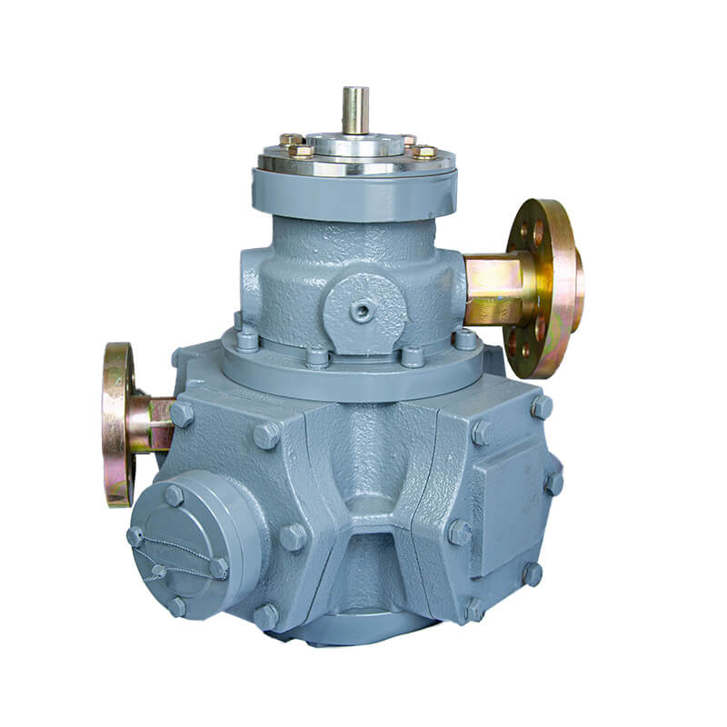

Измеритель объёма СУГ LPG-2 (Топаз, Шельф) аналог
Артикул: 0024
Топаз-сервис (Волгодонск)
Раздел: Измерители объёма и комплектующие · АГЗС
Цена и наличие — по запросу. Поставляем оригинал и аналоги. Доставка по России.
Описание
Измеритель объёма СУГ LPG-2 (Топаз, Шельф) аналог производства Топаз-сервис (Волгодонск) — позиция из раздела «Измерители объёма и комплектующие» для АГЗС. Компания SYNDICAT поставляет оборудование и комплектующие для автозаправочных и газозаправочных станций по всей России. Цена и наличие «Измеритель объёма СУГ LPG-2 (Топаз, Шельф) аналог» — по запросу: оставьте заявку или позвоните, подберём оригинал или аналог и рассчитаем доставку.